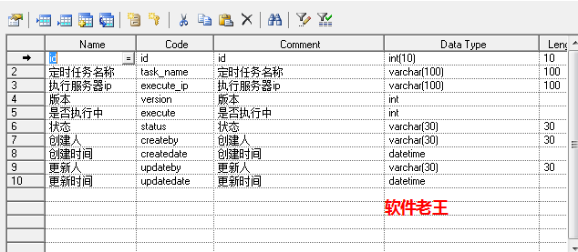

老项目需要多机部署，项目中有几十个定时任务，一旦多机部署，定时任务就会重复执行，固定ip与错开时间方案都存在较大弊端，最终采用的方案是:AOP+排他锁的方式，软件老王已验证通过，介绍下，有需要的朋友可以参考下。
软件老王基本方案是采用：AOP+排他锁的方式。
（1）目前老项目有几十个定时任务，采用AOP的方式，可以保证代码的无侵入（即使简单的微侵入，例如增加几行代码，测试验证的工作量也会比较大的）。
（2）采用排他锁的方式，保证批处理的高可用，不重复执行。
Aop的概念就不说了，就是面向切面编程，通俗点就是统一处理一类问题，比如日志、请求鉴权等，刚开始不确定是否可行，系统中的批处理是使用spring注解的方式@Scheduled进行批处理，采用aop对注解@Scheduled进行编程，统一拦截批处理，代码如下：
/**
* 软件老王-AOP处理类
*/
@Aspect
@Component
public class ScheduledAspect {
@Autowired
ScheduleService scheduleService ;
@Pointcut( "@annotation(org.springframework.scheduling.annotation.Scheduled)")
public void scheduled() {
}
@Around("scheduled()")
public Object scheduled(ProceedingJoinPoint pjd) {
Object result = null;
String taskName = pjd.getSignature().getName();
try {
if (scheduleService.isInvoke(taskName)){
return result;
}
result = pjd.proceed();
scheduleService.end(taskName);
} catch (Throwable e) {
throw new RuntimeException(e);
}
return result;
}
}
说明：
（1）面向标签编程
@Pointcut( "@annotation(org.springframework.scheduling.annotation.Scheduled)")这样注解会拦截标签@Scheduled。
（2）使用aop的环绕标签 @Around("scheduled()")
@before标签拿不到执行完成状态，需要使用环绕标签@@Around，在标签中可以拿到执行完成后状态，以便放开锁。
result = pjd.proceed();（3）结合排他锁使用
@Autowired
ScheduleService scheduleService ;排他锁，简单来说就是通过数据库总的标志位+版版号进行的控制.
软件老王的代码如下，：
/**
* 软件老王-排他锁服务类
*/
@Service
public class ScheduleService {
@Autowired
ScheduleClusterMapper scheduleClusterMapper;
public boolean isInvoke(String taskName) {
boolean isValid = false;
try {
ScheduleCluster carIndexEntity = scheduleClusterMapper.selectByTaskName(taskName);
int execute = carIndexEntity.getExecute();
String ip = InetAddress.getLocalHost().getHostAddress();
long currentTimeMillis = System.currentTimeMillis();
long time = carIndexEntity.getUpdatedate().getTime();
if (execute == 0) {
isValid = start(taskName, carIndexEntity.getVersion(), ip);
}
} catch (UnknownHostException e) {
e.printStackTrace();
}
return isValid;
}
//执行锁机制，软件老王
public boolean start(String taskName, int version, String ip) {
ScheduleCluster scheduleCluster = new ScheduleCluster();
scheduleCluster.setVersion(version);
scheduleCluster.setExecuteIp(ip);
scheduleCluster.setUpdatedate(DateUtil.getCurrentTime());
scheduleCluster.setTaskName(taskName);
scheduleCluster.setExecute(1);
int count = scheduleClusterMapper.updateByTaskName(scheduleCluster);
if (count > 0) {
return true;
}
return false;
}
//执行解锁机制，软件老王
public void end(String taskName) {
ScheduleCluster scheduleCluster = new ScheduleCluster();
scheduleCluster.setUpdatedate(DateUtil.getCurrentTime());
scheduleCluster.setTaskName(taskName);
scheduleCluster.setExecute(0);
scheduleClusterMapper.updateNormalByTaskName(scheduleCluster);
}
}说明：
大的原理是在where条件后带上版本号，在update中更新version+1，这样通过影响数据库的影响条数，来判断是否拿到锁。
（1）主类中调用start方法，该方法是更新批处理状态，软件老王这里设置了一个小点，在updateByTaskName的mybatis方法中，有个version+1的更新；
（2）end方法放在更新完成后，释放锁。
（3）其实还有一个点，可以考虑下，需要有个机制，比如出现异常情况，刚好批处理执行中，重启服务了等，下次批处理执行前，假如锁还未释放，代码中增加释放锁的机制。
（1）数据库表设计

（2）mybatis相关方法
（1）第一个是start对应方法，执行锁和version增加。
<update id="updateByTaskName" parameterType="com.yutong.dmp.entity.ScheduleCluster">
update t_schedule_cluster
<set>
<if test="executeIp != null">
execute_ip = #{executeIp,jdbcType=VARCHAR},
</if>
<if test="version != null">
version = #{version,jdbcType=INTEGER} + 1,
</if>
<if test="execute != null">
execute = #{execute,jdbcType=INTEGER},
</if>
<if test="status != null">
status = #{status,jdbcType=VARCHAR},
</if>
<if test="createby != null">
createby = #{createby,jdbcType=VARCHAR},
</if>
<if test="createdate != null">
createdate = #{createdate,jdbcType=TIMESTAMP},
</if>
<if test="updateby != null">
updateby = #{updateby,jdbcType=VARCHAR},
</if>
<if test="updatedate != null">
updatedate = #{updatedate,jdbcType=TIMESTAMP},
</if>
</set>
where task_name = #{taskName,jdbcType=VARCHAR}
and version = #{version,jdbcType=INTEGER}
and status ='1'
</update>（2）第二个是释放锁，更改excute为0。
<update id="updateNormalByTaskName" parameterType="com.yutong.dmp.entity.ScheduleCluster">
update t_schedule_cluster
<set>
<if test="executeIp != null">
execute_ip = #{executeIp,jdbcType=VARCHAR},
</if>
<if test="version != null">
version = #{version,jdbcType=INTEGER},
</if>
<if test="execute != null">
execute = #{execute,jdbcType=INTEGER},
</if>
<if test="status != null">
status = #{status,jdbcType=VARCHAR},
</if>
<if test="createby != null">
createby = #{createby,jdbcType=VARCHAR},
</if>
<if test="createdate != null">
createdate = #{createdate,jdbcType=TIMESTAMP},
</if>
<if test="updateby != null">
updateby = #{updateby,jdbcType=VARCHAR},
</if>
<if test="updatedate != null">
updatedate = #{updatedate,jdbcType=TIMESTAMP},
</if>
</set>
where task_name = #{taskName,jdbcType=VARCHAR}
and status ='1'
</update>I’m 「软件老王」，如果觉得还可以的话，关注下呗，后续更新秒知！欢迎讨论区、同名公众号留言交流！